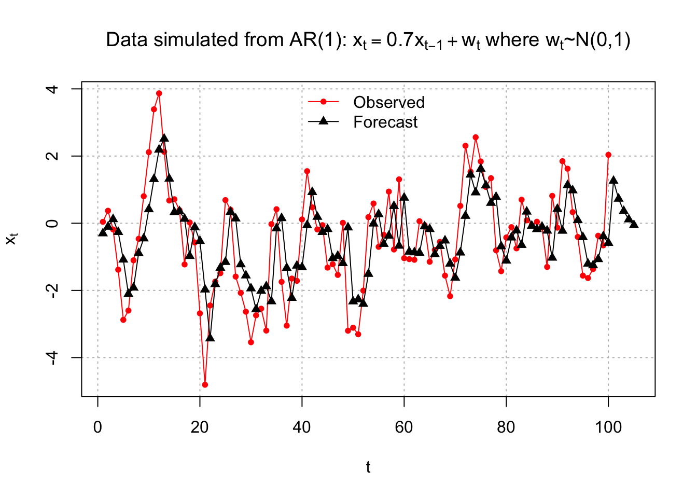
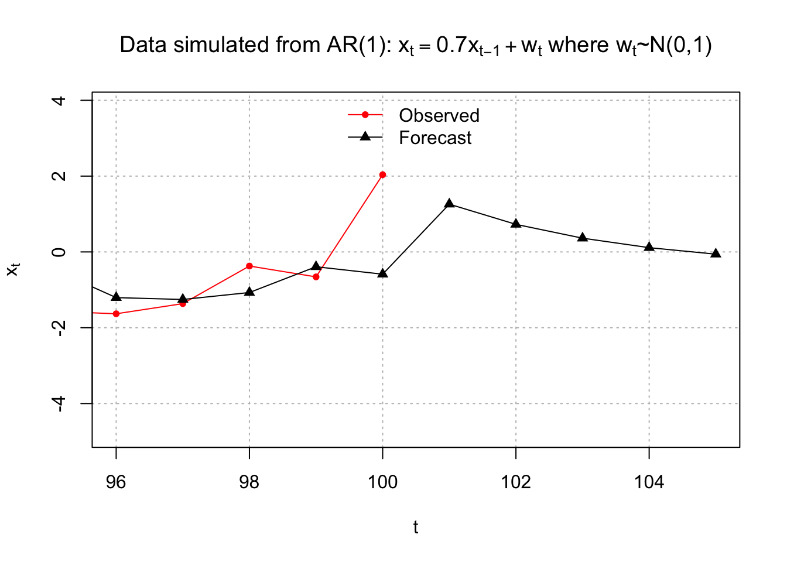
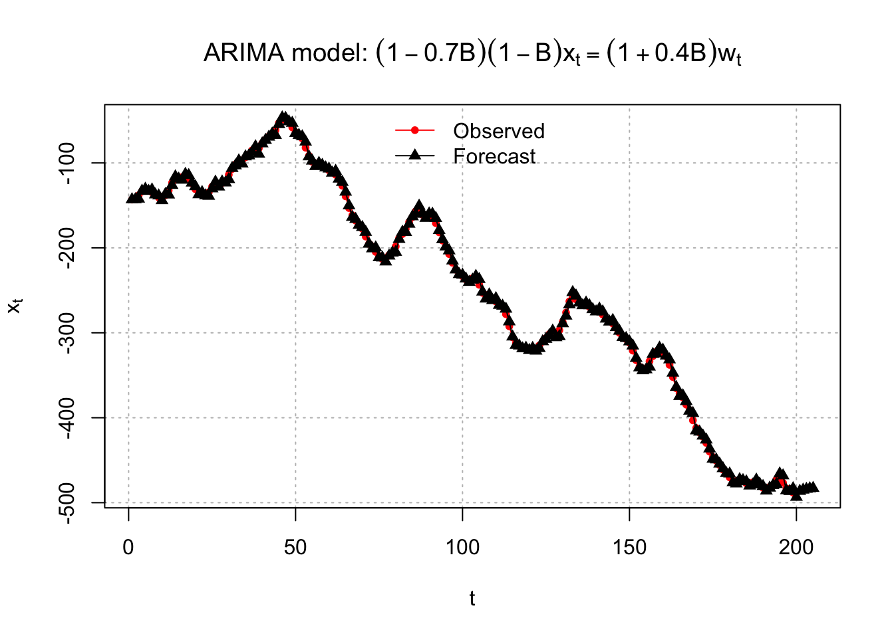
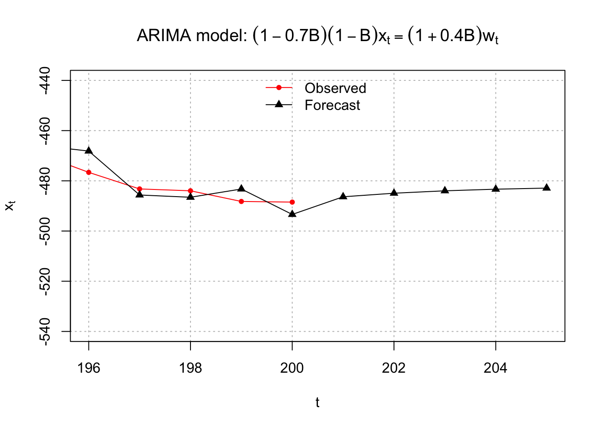
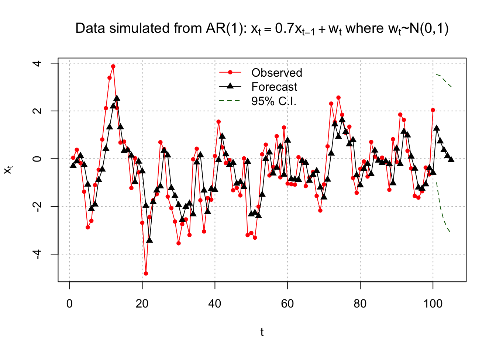
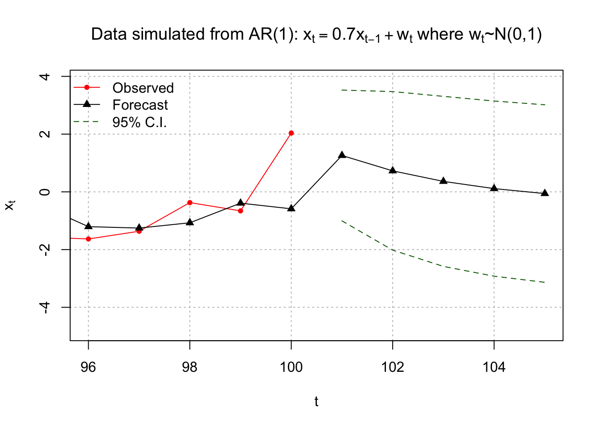
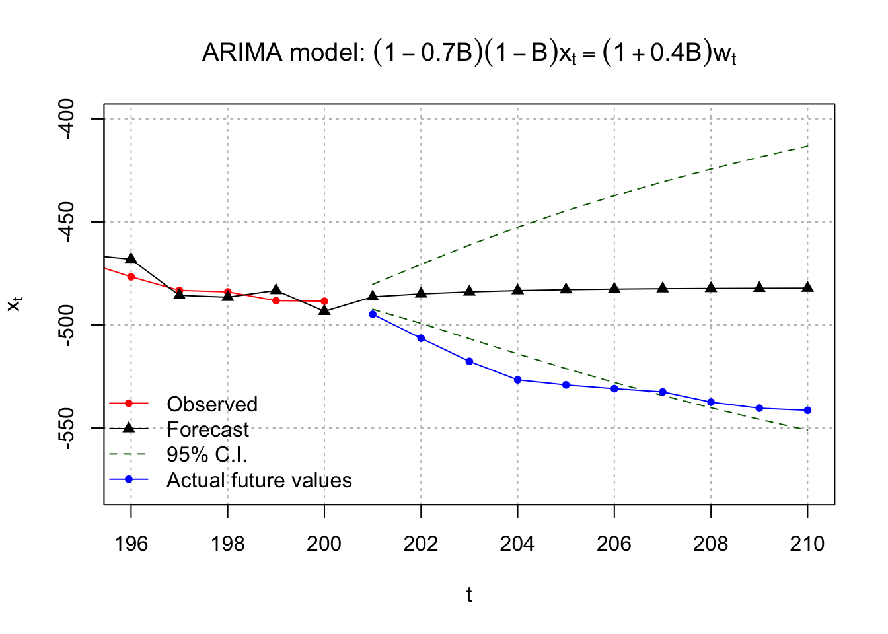

Chapter 15 Forecasting
15.1 Point Estimates
Predict (forecast) future values of a time series, \(x_{n+1}, x_{n+2}, …\) based on \(x_1, …, x_n\).
For m time points into the future, the “minimum mean square error predictor” of \(x_{n+m}\) is \(x^n_{n+m} = E(x_{n+m}|x_n,x_{n-1},…, x_1)\). What does this mean?
\(E(x_{n+m}|x_n,x_{n-1},…, x_1)\) is a conditional expectation. It denotes the expected value of x at m time points into the future, conditional on the time series observed.
\(E(x_{n+m}|x_n,x_{n-1},…, x_1)\) is the value of \(g(x_1,..,x_n)\) that minimizes \(E[x_{n+m} – g(x_1,..,x_n)]^2\)
Instead of using this as a predictor, we will use an approximation \(\tilde x^n_{n+m} = E(x_{n+m}|x_n,x_{n-1},…,x_1,…)\). What is the difference?
\(\tilde x^n_{n+m}\) is based on an infinite past and \(x_{n+m}^n\) is based on a finite past (which is what we actually have).
For notational convenience, I will denote \(x_n, x_{n-1}, …, x_1,…\) as \(I_n\). This symbolizes all INFORMATION up to time point n from an INFINITE past.
Example 15.1 AR(1)
The model is \(x_t = \phi_1x_{t-1} + w_t\) where \(w_t \sim ind(0,\sigma_w^2)\). Taking into account the observed data of \(x_1, …, x_n\), this also essentially means \(w_1, …, w_n\) are observed.
Suppose we have observations up to time n. We want to forecast future values for time n + m (m > 0). Thus, we want \(x_{n+m} = \phi_1x_{n+m-1} + w_{n+m}.\)
Let m = 1. Then the “forecasted value at time n + 1 given information up to time n” is
\[\tilde x^n_{n+1} = E(x_{n+1}|I_n)\\ = E(\phi_1x_n + w_{n+1} |I_n)\\ = E(\phi_1x_n |I_n) + E(w_{n+1} |I_n)\\ = \phi_1E(x_n |I_n) + 0=\phi_1x_n\]
The last line come about because \(w_{n+1}\) is unobserved and the \(w_{n+1} \sim ind(0,\sigma_w^2)\). Also the expectation is found CONDITIONAL on knowing \(x_n, x_{n-1},…, x_1,…;\) i.e., we know what \(x_n\) is!
Let m = 2. Then
\[\tilde x^n_{n+2} = E(x_{n+2}|I_n)\\ = E(\phi_1x_{n+1} + w_{n+2} |I_n)\\ = E(\phi_1x_{n+1} |I_n) + E(w_{n+2} |I_n)\\ = \phi_1E(x_{n+1} |I_n) + 0=\phi_1\tilde x^n_{n+1}\]
The last equation come aboue because \(w_{n+2}\) is unobserved and the \(w_{n+2} \sim (0, \sigma_w^2)\)
\(\tilde x^n_{n+2}\) can be further written as \(\phi_1 \tilde x_{n+1}^n =\phi_1^2x_n\)
In summary,
| m | \(\tilde x^n_{n+m}\) |
|---|---|
| 1 | \(\phi_1x_n\) |
| 2 | \(\phi_1 \tilde x_{n+1}^n\) |
| 3 | \(\phi_1 \tilde x_{n+2}^n\) |
| 4 | \(\phi_1 \tilde x_{n+3}^n\) |
| \(\vdots\) | \(\vdots\) |
Because the parameters are generally not known, they are replaced with their estimates. Thus, \(\tilde x^n_{n+1} = \hat \phi_1x_n , \tilde x^n_{n+2} = \hat\phi_1\tilde x_{n+1}^n,…\) .
It would be more notationally correct to refer to this as \(\hat{\tilde x}^n_{n+1} = \hat \phi_1 x_n , \hat{\tilde x}^n_{n+2} = \hat \phi_1 \hat{\tilde x}^n_{n+1} , …\), but I chose to follow the notational convention of most textbooks on time series.
Question: What happens to the forecast as \(m \to \infty\)?
Ans: The forecast goes to 0 because \(E(x_t) = 0\).
What if \(\mu \ne 0\). Then \(x_t = \mu(1-\phi_1) + \phi_1x_{t-1} + w_t\) where \(\mu(1-\phi_1) = \alpha\) is a constant term. Then the forecast goes to \(\mu(1-\phi_1)\) as \(m \to \infty\)
| m | \(\tilde x^n_{n+m}\) |
|---|---|
| 1 | \(\mu(1-\phi_1)+\phi_1x_n\) |
| 2 | \(\mu(1-\phi_1)+\phi_1\tilde x^n_{n+1}\) |
| 3 | \(\mu(1-\phi_1)+\phi_1\tilde x^n_{n+2}\) |
| \(\vdots\) | \(\vdots\) |
Example 15.2 MA(1)
Suppose we have observations up to time n and we want to forecast future values for time n + m (m > 0).
\(x_t=\theta_1w_{t-1}+w_t\) where \(w_t \sim ind.(0, \sigma_w^2)\)
Note that at time n + m, \(x_{n+m} = \theta_1w_{n+m-1} + w_{n+m}\).
Let m = 1. Then
\[\tilde x^n_{n+1}=E(x_{n+1}| I_n)\\ =E(\theta_1w_n+w_{n+1}| I_n)\\ =\theta_1E(w_n| I_n)+ E(w_{n+1}| I_n)\\ =\theta_1w_n+0=\theta_1w_n\]
This is b/c \(w_{n+1}\) is unobserved with \(w_{n+1} \sim(0,\sigma_w^2)\); also \(x_n = \phi_1x_{n-1} + w_n\) has been observed
Let m = 2. Then
\[\tilde x_{n+2}^n=E(x_{n+2}| I_n)\\ =E(\theta_1w_{n+1}+w_{n+2}| I_n)\\ =\theta_1E(w_{n+1}| I_n)+E(w_{n+2}|I_n)\\ =\theta_1 \times 0 +0=0\]
In summary,
| m | \(\tilde x^n_{n+m}\) |
|---|---|
| 1 | \(\theta_1w_n\) |
| 2 | 0 |
| 3 | 0 |
| 4 | 0 |
| \(\vdots\) | \(\vdots\) |
Notice how quickly the forecasted value becomes the mean of the series, 0. Of course, you can also have other MA(q) models with a non-zero mean too. Then in this case, you will see the forecasted value quickly becomes the mean of the series.
Because the parameters are generally not known, they are replaced with their estimates. Thus, \(\tilde x^n_{n+1} = \hat \theta_1 \tilde w^n_n.\)
What is \(\tilde w^n_n\) ? The answer comes from the residuals!
How are residuals found? These are symbolically denoted as \(\tilde w_t^n\) for t = 1, …, n.
Now, \(w_t = x_t - \theta_1w_{t-1}\). Let \(w_0 = 0\) (remember mean is 0 for white noise). Then
\[w_1 = x_1 - \theta_1w_0 = x_1 \implies \tilde w_1^n= x_1\\ w_2 = x_2 - \theta_1w_1 \implies \tilde w^n_w=x_2-\hat \theta_1\tilde w_1^n\\ \vdots\\ w_n = x_n - \theta_1w_{n-1} \implies \tilde w_n^n=x_n-\hat \theta_1\tilde w^n_{n-1}\]
More complicated models follow the same process. See Shumway and Stoffer’s textbook for a ARMA(1,1) example. Alternate methods also include backcasting so that one does not necessarily start \(x_t\) and \(w_t\) at fixed constant values (like 0) when t < 1.
Example 15.3 ARIMA(1,1,1)
Suppose we have observations up to time n and we want to forecast future values for time n + m (m > 0).
\((1-\phi_1B)(1-B)x_t = (1+\theta_1B)w_t\) where \(w_t \sim ind(0,\sigma_w^2)\). This can be rewritten as \(x_t = (1+\phi_1)x_{t-1} - \phi_1x_{t-2} + \theta_1w_{t-1} + w_t.\) At time n + m, we have
\[x_{n+m} = (1+\phi_1)x_{n+m-1} - \phi_1x_{n+m-2} + \theta_1w_{n+m-1} + w_{n+m}\]
Let m = 1. Then
\[\tilde x^n_{n+1} = E(x_{n+1}|I_n)\\ = E[(1+\phi_1)x_n - \phi_1x_{n-1} + \theta_1w_n + w_{n+1}|I_n]\\ = (1+\phi_1)E(x_n|I_n) - \phi_1E(x_{n-1}|I_n) + \theta_1E(w_n|I_n) + E(w_{n+1}|I_n)\\ = (1+\phi_1)x_n - \phi_1x_{n-1} + \theta_1w_n + 0\\ = (1+\phi_1)x_n - \phi_1x_{n-1} + \theta_1w_n\]
Let m = 2. Then
\[\tilde x^n_{n+2}= E(x_{n+2}|I_n)\\ = E[(1+\phi_1)x_{n+1} - \phi_1x_n + \theta_1w_{n+1} + w_{n+2}|I_n]\\ = (1+\phi_1)E(x_{n+1}|I_n) - \phi_1E(x_n|I_n) + \theta_1E(w_{n+1}|I_n) + E(w_{n+2}|I_n)\\ = (1+\phi_1)\tilde x^n_{n+1} - \phi_1x_n + \theta_10 + 0 \\ = (1+\phi_1)\tilde x^n_{n+1} - \phi_1x_n\]
In summary,
| m | \(\tilde x^n_{n+m}\) |
|---|---|
| 1 | \((1+\phi_1)x_n-\phi_1x_{n-1}+\theta_1w_n\) |
| 2 | \((1+\phi_1)\tilde x^n_{n+1}-\phi_1x_n\) |
| 3 | \((1+\phi_1)\tilde x^n_{n+2}-\phi_1\tilde x^n_{n+1}\) |
| 4 | \((1+\phi_1)\tilde x^n_{n+3}-\phi_1\tilde x^n_{n+2}\) |
| \(\vdots\) | \(\vdots\) |
Because the parameters are generally not known, they are replaced with their estimates. Also, \(\tilde w^n_n\) replaces \(w_n\).
Example 15.4 AR(1) with \(\phi_1=0.7, \mu=0, \sigma_w^2=1\) (fit_AR1.R)
ar1 <- read.table("AR1.0.7.txt", header = TRUE, sep = "")
x <- ar1$xmod.fit <- arima(x=x, order = c(1,0,0))
mod.fit##
## Call:
## arima(x = x, order = c(1, 0, 0))
##
## Coefficients:
## ar1 intercept
## 0.6854 -0.4322
## s.e. 0.0730 0.3602
##
## sigma^2 estimated as 1.336: log likelihood = -156.68, aic = 319.36# Covariance matrix
mod.fit$var.coef## ar1 intercept
## ar1 0.005324151 0.001518125
## intercept 0.001518125 0.129723806# Forecasting
# Notice class of mod.fit is "Arima". Therefore,
# generic functions, like predict, will actually
# call predict.Arima().
class(mod.fit)## [1] "Arima"# Forecasts 5 times periods into the future
fore.mod <- predict(object=mod.fit, n.ahead = 5, se.fit = TRUE)
fore.mod## $pred
## Time Series:
## Start = 101
## End = 105
## Frequency = 1
## [1] 1.26014875 0.72767770 0.36273810 0.11261952 -0.05880421
##
## $se
## Time Series:
## Start = 101
## End = 105
## Frequency = 1
## [1] 1.155698 1.401082 1.502576 1.547956 1.568820se.fit=TRUE help us calculate the forecast errors \(\sqrt{\hat Var(x_{n+m}-\tilde x^n_{n+m})}\)
# x_100
x[100]## [1] 2.037059Esimated model:
\((1-0.6854B)x_t=-0.1360+w_t\) where \(\hat \sigma_w^2=1.336, \hat \alpha=-0.1360\)
Equivalently,
\(x_t=-0.1360+0.6854x_{t-1}+w_t\)
Forecasts:
| m | \(\tilde x^{100}_{100+m}\) |
|---|---|
| 1 | \(\hat \mu(1-\hat \phi_1)+\hat \phi_1x_{100}= -0.1360+0.6854\times2.0371 = 1.2602\) |
| 2 | \(\hat \mu(1-\hat \phi_1)+\hat \phi_1 \tilde x^{100}_{101}= -0.1360+0.6854\times1.2602 = 0.7277\) |
| 3 | \(\hat \mu(1-\hat \phi_1)+\hat \phi_1 \tilde x^{100}_{102}= -0.1360+0.6854\times0.7277 = 0.3628\) |
Notice the syntax used in the predict() function! Calculation of the standard errors and confidence intervals for \(x_{n+m}\) will be discussed later.
Below are the residuals.
# Residuals
names(mod.fit)## [1] "coef" "sigma2" "var.coef" "mask" "loglik" "aic"
## [7] "arma" "residuals" "call" "series" "code" "n.cond"
## [13] "nobs" "model"mod.fit$residuals## Time Series:
## Start = 1
## End = 100
## Frequency = 1
## [1] 0.34512757 0.47929876 -0.30435533 -1.11988088 -1.79209750 -0.49310572
## [7] 0.81405525 0.42879914 1.25729050 1.70020635 2.07779534 1.67912191
## [13] -0.38726754 -0.64611559 0.38703829 0.03571535 -1.35763007 0.99968954
## [19] -0.45290645 -2.15491111 -2.83313677 0.98361535 0.07454116 -0.15973235
## [25] 1.84484529 0.06582981 -1.72747803 -0.84878091 -1.07731429 -1.60202506
## [31] -0.17667776 -0.52931668 -1.31612511 2.29999548 0.57061181 -1.89441998
## [37] -1.71661675 0.57839691 -0.45003600 1.42465971 1.60844137 -0.45328354
## [43] -0.37352544 0.20534209 -1.14559193 -0.17931856 -0.56563679 1.20304541
## [49] -3.07231635 -0.78136042 -1.03857282 0.39650807 1.69131982 0.59980990
## [55] -0.96923016 0.27167373 1.31502150 -1.29145944 1.97726357 -1.79928954
## [61] -0.21982128 -0.21986889 0.94232700 0.03740584 -0.97208416 0.12970024
## [67] 0.12357507 -1.04303844 -0.96555694 0.54591192 1.39034520 2.08915190
## [73] 0.09042012 1.64273203 0.22049641 -0.04324800 0.73654908 -1.59055629
## [79] -0.73807475 0.68969711 0.31072223 -0.53241010 1.34922516 -0.25855619
## [85] 0.01695015 0.22217406 -0.02128355 -1.07823047 1.84349787 -0.55457448
## [91] 2.07330260 0.49358393 -0.64600215 -0.49897850 -1.14429705 -0.42652847
## [97] -0.10984115 0.69886850 -0.26732184 2.62425181\(x_t=-0.1360+0.6854x_{t-1}+w_t\\ \implies w_t=x_t+0.1360-0.6854x_{t-1}\)
Below calculates \(\tilde w^{100}_{100}\)
# Last residual
# as.numeric() removes a leftover label
as.numeric(x[100]-mod.fit$coef[2]*(1-mod.fit$coef[1])-mod.fit$coef[1]*x[99])## [1] 2.624252We can add to the plot of the time series the forecasts t = n, …, m. For visual display, sometimes it is interesting to add the corresponding predicted values for t = 1, …, n. What are these predicted values? A simple computational way to find these in R is use a result from a regression course:
residual = observed – predicted
which leads to
predicted = observed – residual
Similar to there being multiple ways to find residuals, there are multiple ways to find predicted values. Below is how I used predicted = observed – residual and created the corresponding plot.
#Predicted values for t=1,...,100
x-mod.fit$residuals## Time Series:
## Start = 1
## End = 100
## Frequency = 1
## [1] -0.30340077 -0.10739194 0.11890348 -0.26309333 -1.08383902 -2.10707034
## [7] -1.91807243 -0.89265030 -0.45389982 0.41462950 1.31345444 2.18827003
## [13] 2.51460350 1.32202163 0.32725537 0.35356509 0.13081083 -0.97681511
## [19] -0.12031279 -0.52885740 -1.97536418 -3.43159168 -1.81375933 -1.32799788
## [25] -1.15563564 0.33637327 0.13966762 -1.22422757 -1.55676769 -1.94131053
## [31] -2.56448551 -2.01470082 -1.87958305 -2.32623217 -0.15397206 0.14956207
## [37] -1.33186319 -2.22532639 -1.26474600 -1.31125006 -0.05826268 0.92645546
## [43] 0.18830752 -0.26293300 -0.17546130 -1.04140025 -0.97263406 -1.19027465
## [49] -0.12723753 -2.32886791 -2.26764687 -2.40197343 -1.51047567 -0.01204511
## [55] 0.26684602 -0.61738312 -0.37292901 0.50969153 -0.67179037 0.75874171
## [61] -0.84915032 -0.86863111 -0.88201528 -0.09465440 -0.17522667 -0.92232245
## [67] -0.67922958 -0.51681906 -1.20506949 -1.62367209 -0.87465453 0.21744859
## [73] 1.44488414 0.91626098 1.61786635 1.12396813 0.60470274 0.78326329
## [79] -0.68928449 -1.11425918 -0.42697226 -0.21566450 -0.64869799 0.34412995
## [85] -0.07734055 -0.17737999 -0.10528973 -0.22273974 -1.02763595 0.42317691
## [91] -0.22604616 1.13006359 0.97680878 0.09073465 -0.41578825 -1.20522562
## [97] -1.25434524 -1.07096242 -0.39101218 -0.58719250# add the forecasts into the first plot with C.I.s
plot(x = x, ylab = expression(x[t]), xlab = "t", type =
"o", col = "red", lwd = 1, pch = 20, main =
expression(paste("Data simulated from AR(1): ", x[t]
== 0.7*x[t-1] + w[t], " where ", w[t], "~N(0,1)")) ,
panel.first = grid(col = "gray", lty = "dotted"), xlim
= c(1, 105))
lines(x = c(x - mod.fit$residuals, fore.mod$pred), lwd
= 1, col = "black", type = "o", pch = 17)
legend("top", legend = c("Observed", "Forecast"),
lty = c("solid", "solid"), col = c("red", "black"), pch
= c(20, 17), bty = "n")
The x-axis limits were changed in the plot()function to allow for the forecasts for t = 101, …, 105 to be shown. Notice how I put these predicted values together into one vector for the first lines() function call. We use c(x - mod.fit$residuals, fore.mod$pred) to include both the predicted value for observed data(t=1,…,100) and forecast value for future (unobserved data) (t=101,…,105)
Below is a zoomed in version of the plot.
# zoom in (only change the xlim)
plot(x = x, ylab = expression(x[t]), xlab = "t", type =
"o", col = "red", lwd = 1, pch = 20, main =
expression(paste("Data simulated from AR(1): ", x[t]
== 0.7*x[t-1] + w[t], " where ", w[t], "~N(0,1)")) ,
panel.first = grid(col = "gray", lty = "dotted"), xlim =
c(96, 105))
lines(x = c(x - mod.fit$residuals, fore.mod$pred), lwd
= 1, col = "black", type = "o", pch = 17)
legend("top", legend = c("Observed", "Forecast"),
lty = c("solid", "solid"), col = c("red", "black"),
pch=c(20, 17), bty = "n")
Example 15.5 ARIMA(1,1,1) with \(\phi_1=0.7, \theta_1=0.4, \sigma_w^2=9, n=200\)(arima111_sim.R)
arima11 <- read.csv("arima111.csv")
x <- arima11$xmod.fit <- arima(x=x, order=c(1,1,1))
mod.fit##
## Call:
## arima(x = x, order = c(1, 1, 1))
##
## Coefficients:
## ar1 ma1
## 0.6720 0.4681
## s.e. 0.0637 0.0904
##
## sigma^2 estimated as 9.558: log likelihood = -507.68, aic = 1021.36The estimated model is
\((1 - 0.6720B)(1 - B)x_t = (1+0.4681B)w_t\) with $ _w^2 = 9.56$
Equivalently,
\(x_t=(1 + 0.6720)x_{t-1} – 0.6720x_{t-2} + 0.4681w_{t-1} + w_t\)
Forecasts for t=201,…,205:
# Forecasts 5 time periods into the future
fore.mod <- predict(object=mod.fit, n.ahead = 5, se.fit = TRUE)
fore.mod## $pred
## Time Series:
## Start = 201
## End = 205
## Frequency = 1
## [1] -486.3614 -484.9361 -483.9784 -483.3348 -482.9023
##
## $se
## Time Series:
## Start = 201
## End = 205
## Frequency = 1
## [1] 3.091673 7.303206 11.578890 15.682551 19.534208x[199:200]## [1] -488.2191 -488.4823We will discuss later how the standard errors and confidence intervals.
With the help of the above output, by-hand calculations of the forecasts are shown below. Note that \(\tilde w^{200}_{200}\) was found from the R output.
| m | \(\tilde x^n_{n+m}\) |
|---|---|
| 1 | \[(1+\hat \phi_1)x_{200} - \hat \phi_1x_{199} + \hat \theta_1 \tilde w_{200}^{200}\\ = (1+0.6720)(-488.4823) – (0.6720)(-488.2191) + (0.4681)(4.9086)\\ = -486.36\] |
| 2 | \[(1+\hat \phi_1)\tilde x^{200}_{201} - \hat \phi_1x_{200}\\ = (1+0.6720)(-486.36) – (0.6720)(-488.4823)\\ = -484.93\] |
| 3 | \[(1+\hat \phi_1)\tilde x^{200}_{202} -\hat \phi_1 \tilde x^{200}_{201}\\ = (1+0.6720)(-484.9216) - (0.6720)(-486.3584)\\ = -483.96 \] |
Below are plots of the forecasts.
# Forecasts with C.I.s
plot(x = x, ylab = expression(x[t]), xlab = "t", type =
"o", col = "red", lwd = 1, pch = 20, main =
expression(paste("ARIMA model: ", (1 - 0.7*B)*(1-
B)*x[t] == (1 + 0.4*B)*w[t])), panel.first = grid(col =
"gray", lty = "dotted"), xlim = c(1, 205))
lines(x = c(x - mod.fit$residuals, fore.mod$pred), lwd
= 1, col = "black", type = "o", pch = 17)
legend("top", legend = c("Observed", "Forecast"),
lty = c("solid", "solid"), col = c("red", "black"), pch
= c(20, 17), bty = "n")
It is hard to see the observed and forecasted values in the above plot so I zoomed in to create the plot below.
# zoom in
plot(x = x, ylab = expression(x[t]), xlab = "t", type =
"o", col = "red", lwd = 1, pch = 20, main =
expression(paste("ARIMA model: ", (1 - 0.7*B)*(1-
B)*x[t] == (1 + 0.4*B)*w[t])), panel.first =
grid(col = "gray", lty = "dotted"), xlim = c(196,
205), ylim = c(-540, -440))
lines(x = c(x - mod.fit$residuals, fore.mod$pred), lwd
= 1, col = "black", type = "o", pch = 17)
legend("top", legend = c("Observed", "Forecast"),
lty = c("solid", "solid"), col = c("red", "black"), pch =
c(20, 17), bty = "n")
15.2 Inference
It was shown earlier how to write an ARIMA process as an infinite order MA process. To find the standard error of ARIMA forecasts, this needs to be done again.
Example 15.6 AR(1) with \(\mu=0\)
\(x_t=\frac{1}{1-\phi_1B}w_t=(1+\phi_1B+\phi_1^2B^2+...)w_t\)
Then
\[\tilde x^n_{n+m}=E(x_{n+m}| I_n)\\ =E[(1+\phi_1B+\phi_1^2B^2+...)w_{n+m}|I_n]\\ =E[w_{n+m}+\phi_1w_{n+m-1}+\phi_1^2w_{n+m-2}+...| I_n]\]
Let m=1. Then
\[\tilde x^n_{n+1}=E(x_{n+1}| I_n)\\ =E[w_{n+1}+\phi_1w_n+\phi_1^2w_{n-1}+...| I_n]\\ =0+\phi_1w_n+\phi_1^2w_{n-1}+...\]
Note that \[\phi_1w_n+\phi_1^2w_{n-1}+...\\ \phi_1(x_n-\phi_1x_{n-1})+\phi_1^2(x_{n-1}-\phi_1x_{n-2})+...\\ \phi_1x_n-\phi_1^2x_{n-1}+\phi_1^2x_{n-1}-\phi_1^3x_{n-2}+...\\ =\phi_1x_n\]
which is the same value of \(\tilde x^n_{n+1}\) shown earlier.
Let m=2. Then
\[\tilde x^n_{n+2}=E(x_{n+2}| I_n)\\ =E(w_{n+2}+\phi_1w_{n+1}+\phi_1^2w_n+\phi^3_1w_{n-1}+...| I_n)\\ =\phi_1^2w_n+\phi_1^3w_{n-1}+...\]
Let m=3. Then
\[\tilde x^n_{n+3}=E(x_{n+3}| I_n)\\ =E(w_{n+3}+\phi_1w_{n+2}+\phi_1^2w_{n+1}+\phi^3_1w_{n}+...| I_n)\\ =\phi_1^3w_n+\phi_1^4w_{n-1}+...\]
Forecast error: \(x_{n+m}-\tilde x^n_{n+m}=\) observed-forecast
The variance of the forecast error is: \(Var(x_{n+m}-\tilde x^n_{n+m})\)
Shumway and Stoffer denote the variance of the forecast error symbolically as \(P^n_{n+m}\).
Approximate (1-\(\alpha\))100% C.I. for \(x_{n+m}\)
\[\tilde x^n_{n+m} \pm Z_{1-\alpha/2}\sqrt{ \hat Var(x_{n+m}-\tilde x^n_{n+m})}\]
where \(Z_{1-\alpha/2}\) is the \(1-\alpha/2\) quantile of a standard normal distribution.
\(1-\alpha=P(-Z_{1-\alpha/2}< \frac{x_{n+m}-\tilde x^n_{n+m}}{\sqrt{\hat Var(x_{n+m}-\tilde x^n_{n+m})}}<Z_{1-\alpha/2})\)
I refer to this a “confidence interval”. Others may prefer to call this a prediction interval due to adopting the often used naming convention of “prediction intervals” are for random variables and “confidence intervals” are for parameters. In the end, all frequentist-based intervals are confidence intervals. If you want to differentiate between the names, you may. I will just call them confidence intervals or C.I.s for short.
Example 15.7 AR(1) with \(\mu=0\)
For m=1:
\[x_{n+1}-\tilde x^n_{n+1}=(w_{n+1}+\phi_1w_n+\phi_1^2w_{n-1}+...)-(\phi_1w_n+\phi_1^2w_{n-1}+...)\\=w_{n+1}\]
For m=2:
\[x_{n+2}-\tilde x^n_{n+2}=(w_{n+2}+\phi_1w_{n+1}+\phi_1^2w_n+...)-(\phi_1^2w_n+\phi_1^3w_{n-1}+...)\\=w_{n+2}+\phi_1w_{n+1}\] For m=3:
\[x_{n+3}-\tilde x^n_{n+3}=(w_{n+3}+\phi_1w_{n+2}+\phi_1^2w_{n+1}+...)-(\phi_1^3w_n+\phi_1^4w_{n-1}+...)\\w_{n+3}+\phi_1w_{n+2}+\phi_1^2w_{n+1}\]
Note that \(wt \sim ind (0, \sigma_w^2)\). Then
\[Var(x_{n+1}-\tilde x^n_{n+1})=Var(w_{n+1})=\sigma_w^2\\ Var(x_{n+2}-\tilde x^n_{n+2})=Var(w_{n+2}+\phi_1w_{n+1})=\sigma_w^2+\phi_1^2\sigma_w^2\\ Var(x_{n+3}-\tilde x^n_{n+3})=Var(w_{n+3}+\phi_1w_{n+2}+\phi_1^2w_{n+1})=\\ \sigma_w^2+\phi_1^2\sigma_w^2+\phi_1^4\sigma_w^2=\\ \sigma_w^2(1+\phi_1^2+\phi_1^4)\]
In general for an AR(1) process:
\(Var(x_{n+m}-\tilde x^n_{n+m})=\sigma_w^2\sum_{i=1}^{m}(\phi_1^2)^{i-1}\)
The approximate (1-\(\alpha\))100% C.I. for \(x_{n+m}\) is
\[\tilde x^n_{n+m} \pm Z_{1-\alpha/2} \sqrt{ \hat Var(x_{n+m}-\tilde x^n_{n+m}) }\\ \implies \tilde x^n_{n+m} \pm Z_{1-\alpha/2} \hat \sigma_w \sqrt{\sum_{i=1}^{m}(\hat \phi_1^2)^{i-1}}\]
Notice what happens to the confidence interval as m increases – it gets WIDER (although not by much for larger values of m). Why does it make sense for the confidence interval to get wider? Well, we are more uncertain as we go gurther and further from our observed data.
In general for an ARIMA(p,d,q), the formulas for the forecast error, variance of the forecast error, and the C.I. can be derived using the infinite order MA representation.
\(\phi(B)(1-B)^dx_t=\theta(B)w_t\) can be rewritten as
\(x_t=\frac{\theta(B)}{\phi(B)(1-B)^d}w_t=\psi(B)w_t\)
where \(\psi(B)=(1+\psi_1B+\psi_2B^2+...)=\frac{\theta(B)}{\phi(B)(1-B)^d}\)
The forecast error is \(x_{n+m}-\tilde x^n_{n+m} = \sum_{i=0}^{m-1}\psi_iw_{n+m-i}\) where \(\psi_0 = 1\). For example, with an AR(1) and m = 1, $ x_{n+m}-x^n_{n+m} = w_{n+1}$ which matches our previous result.
The variance of the forecast error is
\(Var[x_{n+m}-\tilde x^n_{n+m}]=\sigma_w^2\sum_{i=0}^{m-1}\psi_i^2\)
The approximate (1-\(\alpha\))100% C.I. used in practice is
\(\tilde x^n_{n+m} \pm Z_{1-\alpha/2}\hat\sigma_w\sqrt{\sum_{i=0}^{m-1}\hat \psi_i^2}\)
Example 15.8 MA(1)
The process can be written as \(x_t = (1 + \theta_1B)w_t\)
Translating this to \(x_t = \psi(B)w_t\) produces \(\psi_1 = \theta_1\) and \(\psi_i = 0\) for i > 1. Then
\[Var[x_{n+m}-\tilde x^n_{n+m}]=\sigma_w^2\sum_{i=0}^{m-1}\psi_i^2=\begin{cases} \sigma_w^2 & m=1 \\ \sigma_w^2(1+\theta_1^2) & m \ge 2 \end{cases}\]
Example 15.9 ARIMA(1,1,1)
\[(1-\phi_1B)(1-B)x_t=(1+\theta_1B)w_t\\ \iff x_t=\frac{(1+\theta_1B)}{(1-\phi_1B)(1-B)}w_t=\psi(B)w_t\]
Then \[(1-\phi_1B)(1-B)(1+\psi_1B+\psi_2B^2+\psi_3B^3+...)=(1+\theta_1B)\\ \iff [1-B(1+\phi_1)+\phi_1B^2](1+\psi_1B+\psi_2B^2+\psi_2B^3+...)=(1+\theta_1B)\\ \iff 1+\psi_1B+\psi_2B^2+\psi_3B^3+...\\ -(1+\phi_1)B-\psi_1(1+\phi_1)B^2-\psi_2(1+\phi_1)B^3-\psi_3(1+\phi_1)B^4-...\\ \phi_1B^2+\psi_1\phi_1B^3+\psi_2\phi_1B^4+\psi_3\phi_1B^5=(1+\theta_1B)\]
\[B: \psi_1-(1+\phi_1)=\theta_1\implies \psi_1=1+\phi_1+\theta_1\\ B^2: \psi_2-\psi_1(1+\phi_1)+\phi_1=0\implies \psi_2=\psi_1(1+\phi_1)-\phi_1\\ B^3: \psi_3-\psi_2(1+\phi_1)+\phi_1\psi_1=0\implies \psi_3=\psi_2(1+\phi_1)-\phi_1\psi_1\\ \vdots\\ B^j: \psi_j=\psi_{j-1}(1+\phi_1)-\phi_1\psi_{j-2}\]
\[Var[x_{n+1}-\tilde x^n_{n+1}]=\sigma_w^2\sum_{i=0}^{1-1}\psi_i^2=\sigma_w^2\\ Var[x_{n+2}-\tilde x^n_{n+2}]=\sigma_w^2\sum_{i=0}^{2-1}\psi_i^2=\sigma_w^2[1+(1+\phi_1+\theta_1)^2]\\ \vdots\]
Example 15.10 AR(1) with \(\phi_1=0.7, \mu=0, \sigma_w^2=1\) (fit_AR1.R)
From the previous R code and output, it was found that \(\hat \sigma_w^2 = 1.335638\) and \(\hat \phi_1 = 0.6853698\). The forecasts and standard errors, \(\sqrt{Var(x_{n+m}-\tilde x^n_{n+m})}\) , are automatically calculated by the predict() function:
ar1 <- read.table(file = "AR1.0.7.txt", header = TRUE, sep = "")
head(ar1)## t x
## 1 1 0.0417268
## 2 2 0.3719068
## 3 3 -0.1854518
## 4 4 -1.3829742
## 5 5 -2.8759365
## 6 6 -2.6001761x <- ar1$x
mod.fit <- arima(x = x, order = c(1, 0, 0), method = "CSS-ML", include.mean = TRUE)fore.mod <- predict(object=mod.fit, n.ahead = 5, se.fit
= TRUE)
fore.mod## $pred
## Time Series:
## Start = 101
## End = 105
## Frequency = 1
## [1] 1.26014875 0.72767770 0.36273810 0.11261952 -0.05880421
##
## $se
## Time Series:
## Start = 101
## End = 105
## Frequency = 1
## [1] 1.155698 1.401082 1.502576 1.547956 1.568820You can see the forecast values are 1.26014875 0.72767770 0.36273810 0.11261952 -0.05880421, and the \(\sqrt{\hat Var(x_{n+m}-\tilde x^n_{n+m})}\) are 1.155698 1.401082 1.502576 1.547956 1.568820
In particular, \(\sqrt{\hat Var(x_{101}-\tilde x^{100}_{101})}=1.155698\)
The 95% confidence intervals were found using \(\tilde x^n_{n+m}\pm Z_{1-\alpha/2} \hat \sigma_w \sqrt{\sum_{i=1}^{m}(\hat \phi_1^2)^{i-1}}\) to produce
fore.mod$pred # a vector of length 5## Time Series:
## Start = 101
## End = 105
## Frequency = 1
## [1] 1.26014875 0.72767770 0.36273810 0.11261952 -0.05880421#Calculate 95% C.I.s
low <- fore.mod$pred - qnorm(p = 0.975, mean = 0, sd =
1)*fore.mod$se
up <- fore.mod$pred + qnorm(p = 0.975, mean = 0, sd =
1)*fore.mod$se
data.frame(low, up)## low up
## 1 -1.004978 3.525276
## 2 -2.018392 3.473748
## 3 -2.582258 3.307734
## 4 -2.921319 3.146558
## 5 -3.133634 3.016026Doing the calculations by hand produces:
| m | \(\tilde x^{100}_{100+m}\) | \(Var(x_{100+m}-\tilde x^{100}_{100+m})\) | 95% C.I. |
|---|---|---|---|
| 1 | 1.2601 | \(\hat \sigma_w^2\sum_{i=1}^{1}(\hat \phi_1^2)^{i-1}=\sigma_w^2=1.336\) | \(1.2601\pm 1.96 \sqrt{1.336} = (-1.005, 3.525)\) |
| 2 | 0.7277 | \(\hat \sigma_w^2\sum_{i=1}^{2}(\hat \phi_1^2)^{i-1}=\sigma_w^2(1+\hat \phi_1^2)\\=1.336(1+0.6854^2)=1.963\) | \(0.7277\pm 1.96\sqrt{1.963}= (-2.018, 3.473)\) |
| 3 | 0.3627 | \(\hat \sigma_w^2\sum_{i=1}^{3}(\hat \phi_1^2)^{i-1}=\sigma_w^2(1+\hat \phi_1^2+\hat \phi_1^4)\\=1.336(1+0.6854^2+0.6854^4)\\=2.258\) | \(0.3627\pm 1.96 \sqrt{2.258} = (-2.582, 3.308)\) |
Forecast plots:
plot(x = x, ylab = expression(x[t]), xlab = "t", type =
"o", col = "red", lwd = 1, pch = 20, main =
expression(paste("Data simulated from AR(1): ", x[t]
== 0.7*x[t-1] + w[t], " where ", w[t], "~N(0,1)")) ,
panel.first = grid(col = "gray", lty = "dotted"), xlim
= c(1, 105))
lines(x = c(x - mod.fit$residuals, fore.mod$pred), lwd
= 1, col = "black", type = "o", pch = 17)
lines(y = low, x = 101:105, lwd = 1, col = "darkgreen",
lty = "dashed")
lines(y = up, x = 101:105, lwd = 1, col = "darkgreen",
lty = "dashed")
legend("top", legend = c("Observed", "Forecast",
"95% C.I."), lty = c("solid", "solid", "dashed"),
col = c("red", "black", "darkgreen"), pch = c(20,
17, NA), bty = "n")
# No pch for C.I., that's why we use NA, of course you can use others# zoom in
plot(x = x, ylab = expression(x[t]), xlab = "t", type =
"o", col = "red", lwd = 1, pch = 20, main =
expression(paste("Data simulated from AR(1): ", x[t]
== 0.7*x[t-1] + w[t], " where ", w[t], "~N(0,1)")) ,
panel.first = grid(col = "gray", lty = "dotted"), xlim =
c(96, 105))
lines(x = c(x - mod.fit$residuals, fore.mod$pred), lwd
= 1, col = "black", type = "o", pch = 17)
lines(y = low, x = 101:105, lwd = 1, col = "darkgreen",
lty = "dashed")
lines(y = up, x = 101:105, lwd = 1, col = "darkgreen",
lty = "dashed")
legend("topleft", legend = c("Observed", "Forecast",
"95% C.I."), lty = c("solid", "solid", "dashed"), col
= c("red", "black", "darkgreen"), pch = c(20, 17,
NA), bty = "n")
Example 15.11 ARIMA(1,1,1) with \(\phi_1=0.7, \theta_1=0.4, \sigma_w^2=9, n=200\) (arima111_sim.R)
From the previous R code and output:
#Data could be simulated using the following code - notice the use of the order option.
set.seed(6632)
x <- arima.sim(model = list(order = c(1,1,1), ar = 0.7, ma = 0.4), n = 200, rand.gen = rnorm, sd = 3)#Instead, here data that I had simulated earlier using the same model.
arima111 <- read.csv(file = "arima111.csv")
head(arima111)## time x
## 1 1 -143.2118
## 2 2 -142.8908
## 3 3 -138.0634
## 4 4 -133.5038
## 5 5 -132.7496
## 6 6 -132.2910 tail(arima111)## time x
## 195 195 -469.1263
## 196 196 -476.6298
## 197 197 -483.2368
## 198 198 -483.9744
## 199 199 -488.2191
## 200 200 -488.4823 x <- arima111$xmod.fit <- arima(x = x, order = c(1, 1, 1))
mod.fit##
## Call:
## arima(x = x, order = c(1, 1, 1))
##
## Coefficients:
## ar1 ma1
## 0.6720 0.4681
## s.e. 0.0637 0.0904
##
## sigma^2 estimated as 9.558: log likelihood = -507.68, aic = 1021.36fore.mod <- predict(object = mod.fit, n.ahead = 5, se.fit
= TRUE)
fore.mod## $pred
## Time Series:
## Start = 201
## End = 205
## Frequency = 1
## [1] -486.3614 -484.9361 -483.9784 -483.3348 -482.9023
##
## $se
## Time Series:
## Start = 201
## End = 205
## Frequency = 1
## [1] 3.091673 7.303206 11.578890 15.682551 19.534208#Calculate 95% C.I.s
low <- fore.mod$pred - qnorm(p = 0.975, mean = 0, sd =
1)*fore.mod$se
up <- fore.mod$pred + qnorm(p = 0.975, mean = 0, sd =
1)*fore.mod$se
data.frame(low, up)## low up
## 1 -492.4209 -480.3018
## 2 -499.2502 -470.6221
## 3 -506.6726 -461.2842
## 4 -514.0720 -452.5976
## 5 -521.1886 -444.6159Doing the calculations by hand produces:
| m | \(\tilde x^{200}_{200+m}\) | \(Var(x_{200+m}-\tilde x^{200}_{200+m})\) | 95% C.I. |
|---|---|---|---|
| 1 | -486.36 | \(\hat\sigma_w^2\sum_{i=0}^{1-1}\hat\psi_i^2=\hat \sigma_w=9.558\) | \(-486.36\pm 1.96\sqrt{9.558} = \\(-492.42, -480.30)\) |
| 2 | -484.94 | \(\hat\sigma_w^2\sum_{i=0}^{2-1}\hat\psi_i^2=\hat \sigma_w(1+\hat \psi_w^2)\\=\hat \sigma_w^2(1+(1+\hat \phi_1+\hat \theta_1)^2)\\=9.558(1+(1+0.6720+0.4681)^2)\\=53.334\) | \(-484.94\pm 1.96 \sqrt{53.334}=\\ (-499.25, -470.62)\) |
Because the data is being simulated from an ARIMA(1,1,1) process, 210 observations were actually simulated originally so that one could determine how good the forecasts are for the last 10 time points. Below are the new observations with their forecasts.
fore.mod <- predict(object = mod.fit, n.ahead = 10, se.fit = TRUE)
fore.mod## $pred
## Time Series:
## Start = 201
## End = 210
## Frequency = 1
## [1] -486.3614 -484.9361 -483.9784 -483.3348 -482.9023 -482.6116 -482.4163
## [8] -482.2851 -482.1969 -482.1376
##
## $se
## Time Series:
## Start = 201
## End = 210
## Frequency = 1
## [1] 3.091673 7.303206 11.578890 15.682551 19.534208 23.118991 26.449369
## [8] 29.548210 32.441002 35.152348 #Calculate 95% C.I.s
low <- fore.mod$pred - qnorm(p = 0.975, mean = 0, sd = 1)*fore.mod$se
up <- fore.mod$pred + qnorm(p = 0.975, mean = 0, sd = 1)*fore.mod$se
data.frame(low, up)## low up
## 1 -492.4209 -480.3018
## 2 -499.2502 -470.6221
## 3 -506.6726 -461.2842
## 4 -514.0720 -452.5976
## 5 -521.1886 -444.6159
## 6 -527.9240 -437.2993
## 7 -534.2562 -430.5765
## 8 -540.1985 -424.3717
## 9 -545.7801 -418.6137
## 10 -551.0350 -413.2403#When I originally simulated the data, 210 observations were actually simulated.
# I did this so that I could examine how well the confidence intervals captured the true future values
x.extra <- c(-494.85, -506.44, -517.70, -526.64, -529.10, -530.94, -532.52, -537.46, -540.39, -541.43)| m | \(\tilde x^{200}_{200+m}\) | 95% C.I. lower limit | 95% C.I. upper limit | \(x_{200+m}\) |
|---|---|---|---|---|
| 1 | -486.36 | -492.42 | -480.30 | -494.85 |
| 2 | -484.94 | -499.25 | -470.62 | -506.44 |
| 3 | -483.98 | -506.67 | -461.28 | -517.70 |
| 4 | -483.33 | -514.07 | -452.60 | -526.64 |
| 5 | -482.90 | -521.19 | -444.62 | -529.10 |
| 6 | -482.61 | -527.92 | -437.30 | -530.94 |
| 7 | -482.42 | -534.26 | -430.58 | -532.52 |
| 8 | -482.29 | -540.20 | -424.37 | -537.46 |
| 9 | -482.20 | -545.78 | -418.61 | -540.39 |
| 10 | -482.14 | -551.04 | -413.24 | -541.43 |
Below is plot of these values. See the program for the code.
#Plot of forecasts, C.I.s, and true future values.
#dev.new(width = 8, height = 6, pointsize = 10)
plot(x = x, ylab = expression(x[t]), xlab = "t", type = "o", col = "red", lwd = 1, pch = 20,
main = expression(paste("ARIMA model: ", (1 - 0.7*B)*(1-B)*x[t] == (1 + 0.4*B)*w[t])),
panel.first=grid(col = "gray", lty = "dotted"), xlim = c(196, 210), ylim = c(-580, -400))
lines(x = c(x - mod.fit$residuals, fore.mod$pred), lwd = 1, col = "black", type = "o", pch = 17)
lines(y = low, x = 201:210, lwd = 1, col = "darkgreen", lty = "dashed")
lines(y = up, x = 201:210, lwd = 1, col = "darkgreen", lty = "dashed")
lines(y = x.extra, x = 201:210, lwd = 1, col = "blue", lty = "solid", type = "o", pch = 20)
legend("bottomleft", legend = c("Observed", "Forecast", "95% C.I.", "Actual future values"),
lty = c("solid", "solid", "dashed", "solid"),
col = c("red", "black", "darkgreen", "blue"), pch = c(20, 17, NA, 20), bty = "n")
Notice that most of the 10 extra observations are outside of the C.I. bounds. Also, notice that the width of the C.I. increases as the time from t = 200 increases.
A few other realizations were simulated to see if the above was an anomaly and indeed the above was an anomaly. The forecast C.I.s did contain the 10 extra observations!
All forecasts and associated inferences assume that what has occurred in the past will occur in the future. Thus, trends seen in the past will continue in the future. What could happen if this does not occur?
Well, then you can just throw away what you just learned!!